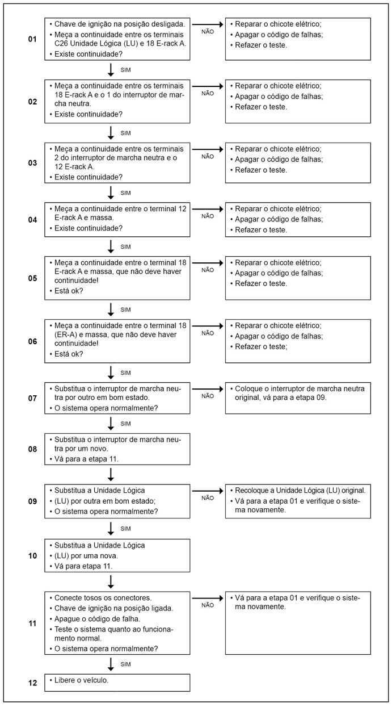

|
Descrição da Falha
Circuito do interruptor de neutro, curto circuito para o massa.
Indicação de Falha
Luz de alerta acende constantemente em amarelo com símbolo  e ativa o alarme sonoro curto, com o veículo andando ou parado.
e ativa o alarme sonoro curto, com o veículo andando ou parado.
Estratégia de Monitoramento
O
módulo PTM (Power Train Manager) monitora a rede CAN do circuito do interruptor de neutro.
Efeito da Falha
O motor não liga.
Possíveis Falhas
FMI 5: Curto circuito para o massa.
FMI 12: Circuito interrompido ou curto circuito para o positivo.
Aviso
 Não há
aviso específico para este código. Não há
aviso específico para este código.
Registros de Falhas em Outros
Módulos de Comando
Sim, Unidade Lógica (LU).
Considerar os esquemas
elétricos do veículo

|